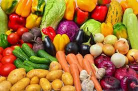

eда
Пи́ща (еда́) — то, что едят, чем питаются[1] — любое вещество[2], пригодное для еды и питья живым организмам для пополнения запасов энергии и необходимых ингредиентов для нормального течения химических реакций обмена веществ: белков, жиров, углеводов, витаминов, минералов и микроэлементов. Питательные вещества попадают в живой организм, где усваиваются клетками с целью выработки и накопления энергии, поддержания жизнедеятельности, а также обеспечения ростовых процессов и созревания.
Основное назначение пищи — быть источником энергии, возобновляемых материалов и «строительного материала» для организма, однако, немаловажным в питании человека является и фактор получения удовольствия (удовлетворение голода) от еды.
Обычно пища делится по происхождению на растительную и животную.
В отношении питания одомашненных животных распространено и употребимо понятие корм.
Область человеческой деятельности, связанная с приготовлением пищи, называется кулинария (кухонное ремесло).
В истории сложилось так, что люди обеспечивали свои потребности в продовольствии несколькими основными путями: охотой, собирательством и сельскохозяйственным производством. На сегодняшний день большая часть потребности в пище во всём мире удовлетворяется с помощью пищевой промышленности
.

мясо
Мя́со — скелетная поперечно-полосатая мускулатура животного с прилегающими к ней жировой и соединительной тканями, а также прилегающей костной тканью (костное мясо или мясо на кости) или без неё (бескостное мясо)[1].
Также мясом иногда называют некоторые мякотные субпродукты: язык, печень, почки, мозги, сердце, диафрагмы, мясо голов, пищевода и т. д. Мясо используется преимущественно как пищевой продукт.
Большая часть мяса, потребляемого людьми, производится посредством забоя сельскохозяйственных животных специальных мясных пород на скотобойнях. В пищу используется мясо и других животных (дикие крупные и мелкие млекопитающие, рептилии, амфибии и пр.). В различных кухнях мира используется мясо разных животных. В основном это зависит от доступности сортов и традиций кухни.
Рассматривается возможность выращивания мяса «в пробирке»[2].
Слово «мясо» может употребляться и в переносном значении (например, «пушечное мясо»).
сладости
Конди́терские изде́лия — продукты питания, как правило, с большим содержанием сахара, отличающиеся высокой калорийностью и усваиваемостью[1]. Подразделяются на группы: сахаристые, мучные кондитерские изделия, шоколад, какао[2]
В качестве основного сырья для приготовления кондитерских изделий используются следующие виды продуктов: мука (пшеничная, реже кукурузная, рисовая, овсяная и др.), сахар, мёд, фрукты и ягоды, молоко и сливки, жиры, яйца, дрожжи, крахмал, какао, орехи, пищевые кислоты, желирующие вещества, вкусовые и ароматические добавки, пищевые красители и разрыхлители.
Кулинар и историк В. В. Похлёбкин считал, что во всех видах кондитерского теста мука занимает подчинённое положение (исключение — тесто для куличей и пряников)[3] и отсутствует вода.

oвощи
О́вощи — кулинарный термин, обозначающий съедобную часть (например, плод или клубень) некоторых растений, а также всякую твёрдую растительную пищу, за исключением фруктов, круп и орехов (включение в эту категорию плодовых тел грибов и съедобных водорослей зависит от источника). Кулинарный термин «овощ» может применяться к съедобным плодам, которые с точки зрения ботаники являются ягодами.
Овощи являются важной частью рациона человека. Источником овощей в подавляющем большинстве случаев служат овощные культуры, возделываемые сельскохозяйственными предприятиями в промышленных масштабах. Выращиванием овощей занимается овощеводство[1].
